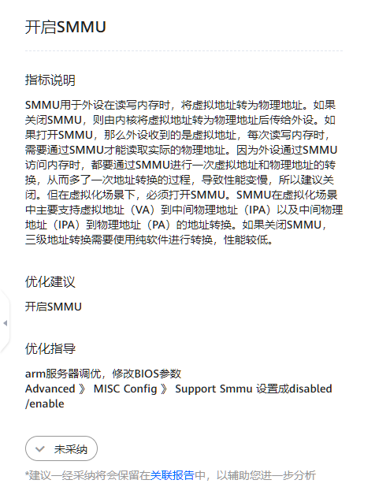
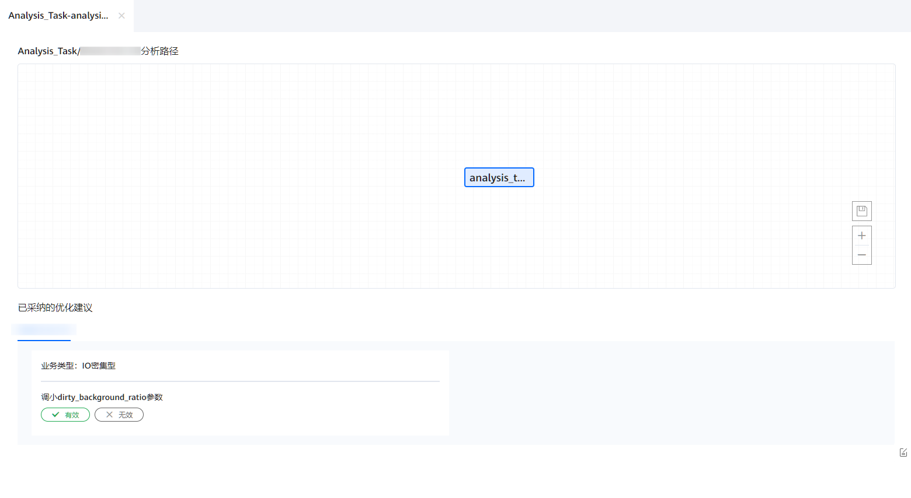

前提条件
已创建分析任务，并且成功完成分析。
操作步骤
- 在“工程管理”区域，依次单击指定工程和分析任务名称前的
 。
。展开节点列表。
- 单击节点名称查看分析结果。
打开分析结果页面。
图1 分析结果页面
- （可选）选择业务类型。
- 根据实际情况选择业务类型。可选类型包括：CPU密集型、网络IO密集型和存储IO密集型。可以选择1~3个业务类型。选中后，选项的文字颜色变为蓝色。默认三个选项均被选中。
- 根据实际情况选择建议范围。可以调节优化建议拓扑树显示“全部建议”或“经过阈值过滤的建议”。图2 选择业务类型

- 单击“热点函数”查看热点函数分析结果,进行调优设置。图3 查看热点函数分析结果

- 查看分析结果页面的优化建议拓扑树图，单击根据配置条件
 ，单击
，单击 选择对应的调优建议。图4 优化建议拓扑树图
选择对应的调优建议。图4 优化建议拓扑树图
- 查看右侧调优建议中的相关配置、指标说明、优化建议及优化指导。单击
 确定采纳该调优建议，再次单击取消采纳该调优建议。图5 调优建议页面
确定采纳该调优建议，再次单击取消采纳该调优建议。图5 调优建议页面
 - 已采纳的调优建议将会保留在关联报告中，单击页面右下角“关联报告”进入关联报告页面。
关联报告页面会显示已经采纳的所有调优建议，单击任务名称可进行查看。根据采纳的调优建议是否达到预期目标，单击左下角“有效”和“无效”进行确定。
图6 关联报告页面

- 查看分析结果页面的优化建议拓扑树图，单击根据配置条件
- 单击“热点函数”右侧的查看热点函数详细数据。热点函数详细数据中包含“函数”和“模块”两个部分，可通过单击函数名称来查看函数详细信息。图7 查看热点函数详细数据